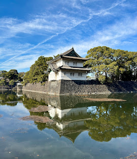
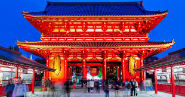

Tokio (jap. 東京都ⓘ Tōkyō-to) – stolica i największe miasto Japonii, położone na południowo-wschodnim wybrzeżu Honsiu i zarazem największy obszar metropolitalny na świecie – liczący 37 115 000 mieszkańców (stan na czerwiec 2024) Spadek -0.21% od czerwca 2023. Nazwa Tōkyō (jap. 東京) oznacza „Wschodnią Stolicę”[3]. Do 1868 r. miasto nazywało się Edo[3].

Cesarski kompleks pałacowy w Tokio (jap. 皇居 Kōkyo[a]; dosł. „pałac, rezydencja cesarska”) – obszar o powierzchni 341 ha, o charakterze parkowym, położony w centralnej dzielnicy tokijskiej Chiyoda. Na terenie kompleksu pałacowego Kōkyo znajduje się kilka budynków, w tym: główny pałac cesarski Kyūden (宮殿), rezydencje niektórych członków rodziny cesarskiej, siedziba Agencji Dworu Cesarskiego (宮内庁, Kunai-chō), odpowiedzialnej za sprawy państwowe dotyczące rodziny cesarskiej, archiwum, muzea i biura administracyjne[1][2].

Sensō-ji (jap. 浅草寺) – najstarsza świątynia buddyjska w Tokio, położona w dzielnicy Taitō, ważne centrum kultu poświęcone bogini (bosatsu 菩薩) miłosierdzia, współczucia i życzliwości Kannon (także Kanzeon)[1][4]. Bierze ona na siebie cierpienie i pomaga odzyskać siły utracone w walce. Świątynia jest jedną z głównych atrakcji turystycznych stolicy Japonii, przyciąga co roku ok. 30 mln odwiedzających[5][b].